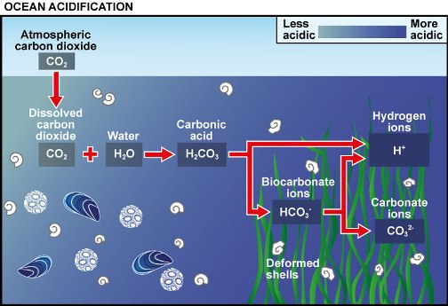

How Ocean Acidification Occurs

(http://www.oceanacidification.org.uk)
- CO2 released from several sources like Cars and Industries, dissolves in water.
- CO2 reacts with water to form carbonic acid.
- Carbonic acid dissolves rapidly to form H+ ions (an acid) and bicarbonate, HCO-3(a base).
- Seawater is naturally saturated with another base, carbonate ion (CO3-2) that acts like an antacid to neutralize the H+, forming more bicarbonate.
- Thus Seawater is actually becoming neutral
Click to See Causes of
Ocean Acidification
Click to View the First Page
(br)Madeby Tarandeep Singh(TDS)- Vgs,X-Aquila
-